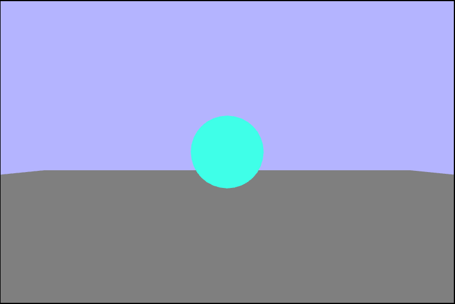

Setting up the scene
This week, and going forward, we will be using a more standard and realistic hierarchy for managing all
of our files. We will no longer be dumping all of the code into a single html file, but rather we will
have the html file as an entry point with all our assests, math, and WebGL code in different files. Why
does that matter? It matters quite a lot actually because modern browser security doesn't allow wesites
to read from local files (which is where we have most of our code!). So how do we make it work then?
Well, we'll have to run a local web server and serve those files to the frontend html file. There are many
different options when it comes to servers, but I opted for the Node.js
http-server package. It takes almost no effort
to get up and running!
# Install the http-server
npm install -g http-server
Then all you have to do to run the server is run the following command and point it to the directory that
contains your app.js file.
http-server /path/to/dir
Our initial scene once we have the server running properly.
Creating the ground
The first thing we want to do is to move the quad (which will be our ground) so that we can see it.
Within the initial scene, both the camera and the quad have their world matricies set to the identitiy, so
we can't see the quad at all because it's in front of the near plane. In order to see it we can either move
the camera or the quad itself, and for right now we'll just concentrate on moving the quad. Since we are
viewing the scene in a right handed cooridinate system, the camera is looking in the $-z$ direction. Let's
start off by translating the quad away from the camera to $(0,\ 0,\ -10)$, and we get the following
quad in the scene:
groundGeometry.worldMatrix.makeTranslation(0, 0, -10);
Now that we can see the quad, let's work on positioning it to be the ground of the scene. To do this we
want to rotate the quad so it lies in th $xz-plane$ and has it's normal along the $y-axis$. Given that
it initially lies in the $xy-plane$ we want to rotate around the $x-axis$ by $90^{\circ}$. Now that it's
in the right plane, we should scale it up by $10\times$ so that it takes up more space. One thing that's
important to note is that if we leave the quad at the original translation of $(0,\ 0,\ -10)$ it will line
up with the surface slice in the middle of the screen and be invisible. To remedy this it just needs to be
translated down in the direction of the normal $(y-axis)$ by $-1$.
// translate the quad so you can see it
let translation = new Matrix4().makeTranslation(0, -1, -10);
// rotate the quad to the xz-plane
let rotation = new Matrix4().makeRotationX(90);
// scale it horizaontally to make it "ground-like"
let scale = new Matrix4().makeScale(10, 0, 10);
// apply transformations in the order translate -> scale -> rotate
groundGeometry.worldMatrix.multiply(translation).multiply(scale).multiply(rotation);
Adding the sphere
Now that we have a ground plane let's add a sphere to our scene to make it more interesting. To do this
we can use the data from /data/sphere.json that was loaded during the call to the
loadAssets() function into the loadedAssets.sphereJSON
variable. We will also need the WebGLGeometryJSON helper class to create and
render the sphere. Behind the scenes what the create() function is doing
is taking in the array of information for the verticies, normals, and face indicies and creating
and binding gl buffers for each. Remember that gl buffers are buffers allocated in VRAM (on the graphics
card itself). Then the render() function attaches the shaders, creates and binds
the vertex position and normal attributes (for the Vertex shader), passes in the
transformation
matricies, and draws the geometry.
// Create the sphere geometry from the loaded json data and the current gl context
sphereGeometry = new WebGLGeometryJSON(gl);
sphereGeometry.create(loadedAssets.sphereJSON);
// Render the sphere in our WebGL context with the camera object,
// projection matrix, and shader program
sphereGeometry.render(camera, projectionMatrix, colorProgram);
So if we just rendered a sphere why is the whole screen grey? Well, we didn't author this sphere ourselves
and the sphere is much much to large for our scene out of the box and it is taking up the entire view
volume.
Also the sphere is grey as well as the ground because we are only passing a single color to the fragment
shader (grey) so everything is coming out grey for now. So the question now is: How do we get the scene we
want with a sphere on top of a plane? We just have to shrink the sphere by (quite) a bit and move it
away from the camera. So let's scale it down to $\frac{1}{100}^{th}$ it's original size and translate it to
$(0,\ 0,\ -5)$ (the middle of the ground).
// translate the sphere to the middle of the ground
translation.makeTranslation(0, 0, -5);
// scale it down so it doesn't take up the entire viewing volume
scale.makeScale(0.01, 0.01, 0.01);
// apply transformations in the order translate -> scale
groundGeometry.worldMatrix.multiply(translation).multiply(scale);
Coloring the sphere
Right now the sphere is the same color as the ground beneath it, and it is difficult to tell that it's even
a full sphere. Let's change the color of the sphere to something more defining against the ground.
// Create a shade value (for convenience)
let shade = 1.0;
// Send the color values to the fragment shader
gl.uniform4f(colorProgram.uniforms.colorUniform, shade, shade, shade, 1.0);
// render the sphere
sphereGeometry.render(camera, projectionMatrix, colorProgram);
That looks more like a sphere!
Moving the Camera
Up until now, the camera for our scene has been static and set at the origin. Now it's time to make our
scene more interactive by allowing the camera to move. First we need to find which direction is "forward"
to the camera since later we'll be rotating it. To find this, we can think about how we define the world
matrix: as a set of basis vectors, and we are really only concerned with the $3\times 3$ matrix of
positional basis vectors starting with $W_{00}$.
$$W =
\begin{bmatrix}
Right_{x} & Up_{x} & Forward_{x} \\
Right_{y} & Up_{y} & Forward_{y} \\
Right_{z} & Up_{z} & Forward_{z} \\
\end{bmatrix}$$
As you can see in the matrix $W$, the "forward" direction of the camera is the $3^{rd}$ column vector
from the world matrix. So we just want to grab that vector from world matrix and turn it into a Vector3
object. But that's not quite what we want here since the camera is actually facing backwards, so the
matrix really looks like this:
$$W =
\begin{bmatrix}
Right_{x} & Up_{x} & Backwards_{x} \\
Right_{y} & Up_{y} & Backwards_{y} \\
Right_{z} & Up_{z} & Backwards_{z} \\
\end{bmatrix}$$
So to really get the forward direction, we just need to invert the backwards direction by multiplying
thru by $-1$.
this.getForward = function() {
// pull out the forward direction from the world matrix and return as a vector
// recall that the camera looks in the "backwards" direction
let e = this.cameraWorldMatrix.elements;
return new Vector3(e[2], e[7], e[10]).multiplyScalar(-1);
}
Now that we know which direction is forward with respect to the camera, we can start on translating the
camera on keyboard input. To do this we will want to increment the cameraPositon
variable within the camera's update() function bvy some small value. I chose to
move by $0.02$ on each iteration, but it could stand to be a bit slower. One thing that also needs to be
accounted for is when neither the up or down keys are being pressed because in the method I used,
the camera position continually increases each key down frame then used as a translation on the camera's
world matrix. So to rememdy this, we can add a third conditional and set the cameraPositon
to $(0,\ 0,\ 0)$ so that the camera stops moving upon releasing both keys. One other possble approach to
avoid using that third conditional might be to make a new Matrix4 (thus set
to the identitiy matrix), at the beginning of the function and then make the translation on it only upon
the proper input.
this.update = function(dt) {
// Get the forward direction
var currentForward = this.getForward();
if (input.up) {
// Move the camera position a little bit in its forward direction
currentForward.multiplyScalar(0.02);
this.cameraPosition.copy(currentForward);
}
if (input.down) {
// Move the camera position a little bit in its backward direction
currentForward.multiplyScalar(-0.02);
this.cameraPosition.copy(currentForward);
}
if (!input.down && !input.up) {
// Reset the camera position to avoid the camera never stopping
this.cameraPosition.set(0, 0, 0);
}
...
// Create the cameraWorldMatrix from scratch based on this.cameraPosition
this.cameraWorldMatrix.multiply(new Matrix4().makeTranslation(this.cameraPosition));
...
}
Rotating the Camera
We just added a way to move the camera forward and backwards, but here we are going to add the ability to
rotate the camera. To do this we need to update the cameraYaw, or the angle of
rotation around the $y-axis$. Why are we rotating around the $y-axis$? Well, because the camera is
positioned with its normal parallel to the $y-axis$. That's very important because if we tried rotating
the camera around either the $x-axis$ or $z-axis$, we would be able to move the camera beneath the ground.
Now that we know how to rotate the camera in a physical sense, let's take a look at the code for the
completed update() function. We are going to rotate the camera in a very similar
fashion to how we handled moving it. We will increment the cameraYaw by a small
amount on either the left or right key being pressed, reset the cameraYaw upon
neither being pressed, and then multiply the cameraWorldMatrix by a
new Matrix4 with a rotation around the $y-axis$ by the cameraYaw.
It's importat to remember that order matters here, and we want to translate the camera first and then rotate
it.
this.update = function(dt) {
// Get the forward direction
var currentForward = this.getForward();
if (input.up) {
// Move the camera position a little bit in its forward direction
currentForward.multiplyScalar(0.02);
this.cameraPosition.copy(currentForward);
}
if (input.down) {
// Move the camera position a little bit in its backward direction
currentForward.multiplyScalar(-0.02);
this.cameraPosition.copy(currentForward);
}
if (!input.down && !input.up) {
// Reset the camera position to avoid the camera moving endlessly
this.cameraPosition.set(0, 0, 0);
}
if (input.left) {
// Add a little bit to the current camera yaw
this.cameraYaw += 0.001;
}
if (input.right) {
// Subtract a little bit to the current camera yaw
this.cameraYaw += 0.001;
}
if (!input.left && !input.right) {
// Reset the camera yaw to avoid the camera spinning endlessly
this.cameraYaw = 0.0;
}
// Order matters here!!! We want to translate -> rotate
// Create the cameraWorldMatrix from scratch based on this.cameraPosition
this.cameraWorldMatrix.multiply(new Matrix4().makeTranslation(this.cameraPosition));
//create a rotation matrix based on cameraYaw and apply it to the cameraWorldMatrix
this.cameraWorldMatrix.multiply(new Matrix4().makeRotationY(this.cameraYaw));
}
Let's make sure both work together
Animating the Sphere Color (Greyscale)
So far the sphere in our scene has just been a static color. First it was grey and now it's white. That's
not a very interesting scene, so let's make it a bit more interesting by animating the color of the sphere.
We can start by using grayscale and sending the same color value to each channel. To give it a smooth
animation we can use a trig function (YAY!), the time.secondsElapsedSinceStart as
the angle, and map the output to the range $[0,\ 1]$. I chose to use $sin()$ which maps to the range
$[-1,\ 1]$. To get it into the $[0,\ 1]$ range, we can half the output and then add $\frac{1}{2}$.
function updateAndRender() {
...
// Animate the color of the sphere using greyscale
let shade = Math.sin(time.secondsElapsedSinceStart) * 0.5 + 0.5;
// Send the color to the fragment shader
gl.uniform4f(colorProgram.uniforms.colorUniform, shade, shade, shade, 1.0);
...
};
Fun With Color!
Now that we have our color animated, let's play around with it a bit and find some different animations.
The basic idea here is to still keep each channel within the $[0,\ 1]$ range, but not have the same value
for each one so that we avoid greyscale colors (if possible).
function updateAndRender() {
...
// Animate the color of the sphere
let shade = Math.sin(time.secondsElapsedSinceStart) * 0.5 + 0.5;
// For convenience set variables for each channel (besides alpha)
let r, g, b;
// Send the color to the fragment shader
gl.uniform4f(colorProgram.uniforms.colorUniform, r, g, b, 1.0);
...
};
r = Math.tan(shade * 2) / -2;
g = Math.tan(shade * 2) * 2;
b = 1 - shade;
let r = Math.tan(shade * Math.PI) * 0.5;
let g = shade;
let b = 1 - shade / Math.E;
let r = shade;
let g = 1 / (shade * shade) ;
let b = 1 - shade / Math.E;

let r = 1 / shade;
let g = 1 - shade / Math.E;
let b = Math.floor(Math.PI * shade * 100) / 100;